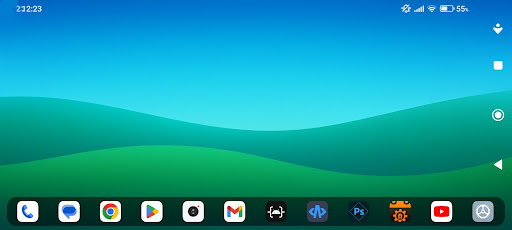
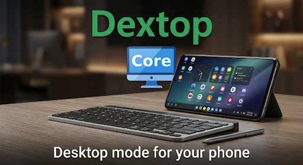

01Why Stock Android & DeX Leave Most Phones Behind
Modern Android phones ship with 8-core Snapdragon, Tensor, or Dimensity chips and 8–16GB of fast RAM—plenty for writing, spreadsheets, coding, and research. Yet turning a standard phone into a workstation hits three walls:
Black Pillar Bars
Default screen mirroring projects a narrow 9:16 portrait strip onto a 16:9 monitor, wasting over half the display.
Stretched Launchers
Standard mobile launchers stretch widgets awkwardly in landscape and lack a desktop dock built for keyboard and mouse.
Locked Ecosystems
Samsung DeX and Moto Ready For are locked to flagship models—leaving Pixel, Xiaomi, OnePlus, and mid-range users out.
02The Universal Fix: Dextop & Dextop Core
With over 300,000 installs, Dextop and its non-launcher sibling Dextop Core bring a lightweight, brand-agnostic landscape workspace to virtually any Android phone, tablet, or foldable.
True Landscape Desktop UI
Native horizontal view for documents, email, browsing, and media—filling phones, tablets, and external screens edge-to-edge.
Separate Workspace Layout
Your portrait home screen stays untouched while Dextop maintains its own desktop themes, widgets, shortcuts, and bottom dock.
Keyboard & Big-Screen Ready
Full Bluetooth keyboard and mouse support—plus external TV/monitor output via USB-C HDMI or Google Home casting.
Zero Root or OEM Conflicts
Lightweight, battery-friendly Play Store install. On Xiaomi or restricted ROMs, Dextop Core keeps stock system gestures working seamlessly.


033 Proven Hardware Setups (From $0 to Full Desk)
Phone, Tablet or Foldable
Launch Dextop or Dextop Core directly on your device. Pair a compact Bluetooth keyboard for an instant coffee-shop typing setup.
Hotel / Travel Big Screen
Cast wirelessly to a TV via Google Home on supported devices, or pack a slim USB-C to HDMI cable to work on any hotel display.
Full Desk Workstation
Use a USB-C hub with HDMI, USB-A, and Power Delivery to run a 27-inch monitor, mechanical keyboard, and mouse while fast-charging.
04Choosing Your Edition: Dextop vs. Dextop Core
Some manufacturers—especially Xiaomi (HyperOS / MIUI) and certain carrier-locked devices—restrict third-party launchers or disable full-screen navigation gestures when you change the default launcher. That's exactly why Dextop Core exists: it delivers the complete horizontal desktop workspace as a standalone app without replacing your home-screen launcher.

| Feature | Dextop (Standard) | Dextop Core (Non-Launcher) |
|---|---|---|
| Best For | Pixel, Motorola, OnePlus, tablets & standard Android | Xiaomi HyperOS, MIUI & OEM-restricted devices |
| Launcher Behavior | Full standalone landscape home launcher | Launches on demand — keeps stock launcher & gestures |
| Landscape Workspace | Custom themes, widgets & dock | Custom themes, widgets & dock |
| Keyboard & Casting | Bluetooth keyboard + HDMI / Cast | Bluetooth keyboard + Google Home Cast |
| Product & Install | Details • Play Store | Details • Play Store (Core) |
Using Dextop or Dextop Core? Check your phone's Android Developer Options to see if freeform / windowed mode is supported—enabling it lets you run resizable multi-window apps alongside your landscape workspace for an even richer PC feel.
05Real-World Productive Workflows
Cloud Dev & SSH
Run Termux, SSH into remote servers, or open VS Code via code-server in Chromium for full Linux access from your pocket.
Distraction-Free Writing
Pair Notion, Obsidian, or Google Docs with a Bluetooth keyboard for ergonomic horizontal typing and all-day battery life.
Car Dashboard & Media Hub
Mount a phone or tablet horizontally for glanceable Maps, Spotify, and podcast controls—or cinematic widescreen playback.
Budget Student PC & Kiosks
Pair any Android handset with a secondhand HDMI monitor for essays and Zoom calls—or deploy clean horizontal display kiosks.
06Samsung DeX vs. Stock Android vs. Dextop & Core
| Capability | Samsung DeX | Stock Mirroring | Dextop / Dextop Core |
|---|---|---|---|
| Device Compatibility | Flagship Galaxy only | All devices | Any Android (incl. restricted OEMs) |
| Landscape UI | Yes | Pillarboxed / Stretched | Native 16:9 desktop + widgets |
| Keeps Stock Gestures | Samsung only | Yes | Preserved via Dextop Core |
| Tablets & Foldables | Galaxy Tabs only | Clunky | Universal phone & tablet support |
| Footprint | Heavy system service | Basic | Lightweight & battery-friendly |
07Frequently Asked Questions
What is the difference between Dextop and Dextop Core?
Dextop is a full standalone desktop launcher. Dextop Core delivers the same native landscape desktop workspace (themes, widgets, dock, keyboard support, casting) without replacing your default home launcher—making it ideal for Xiaomi HyperOS and phones where third-party launchers break full-screen gestures.
Can I get a Samsung DeX experience on Google Pixel, Xiaomi, or Motorola?
Yes. While Samsung DeX is restricted to high-end Galaxy phones, Dextop and Dextop Core work across Pixel, Xiaomi, Motorola, OnePlus, Nothing Phone, and virtually any Android smartphone or tablet.
Do I need an expensive USB-C dock or monitor to use Dextop or Dextop Core?
No. Both work standalone directly on your phone, tablet, or foldable screen. To go big-screen, cast wirelessly with Google Home on supported devices or plug in an inexpensive $15–$25 USB-C to HDMI adapter.
Do Dextop or Dextop Core require root access or ADB commands?
No. Both install like standard apps from the Google Play Store—zero root privileges, bootloader unlocks, or ADB scripts required.
Will either edition change my existing portrait home screen?
No. Both apps keep an independent landscape workspace with separate shortcuts and widgets, leaving your normal portrait home screen untouched.
Get Standard Dextop
Complete standalone landscape desktop launcher with custom shortcuts, widgets, and taskbar for Pixel, Motorola, OnePlus, and tablets.
Get Dextop Core
All the landscape desktop power with zero launcher conflicts—engineered for Xiaomi HyperOS and devices with strict gesture limits.